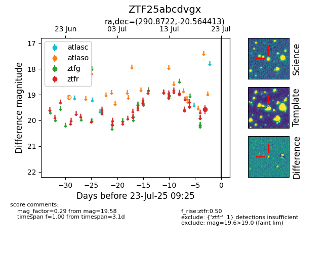

Target ZTF25abcdvgx at 2025-07-23 12:37, see:
FINK: fink-portal.org/ZTF25abcdvgx
Lasair: lasair-ztf.lsst.ac.uk/objects/ZTF25abcdvgx
ALeRCE: alerce.online/object/ZTF25abcdvgx
alt names
ZTF25abcdvgx (ztf,fink)
coordinates:
equatorial (ra, dec) = (290.8722,-20.56441)
galactic (l, b) = (17.6624,-16.04084)
photometry
last atlaso=19.09, ztfr=19.58
1 atlaso, 1 ztfr detections
